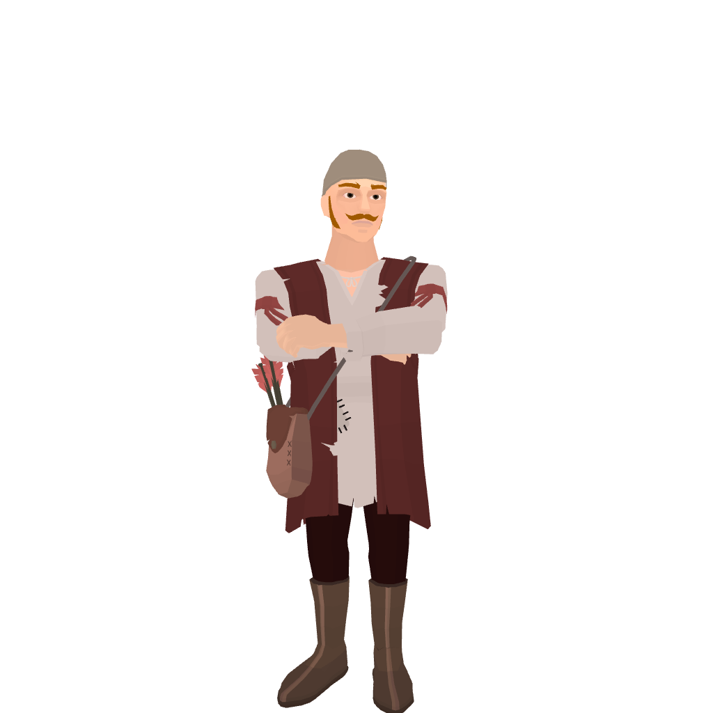
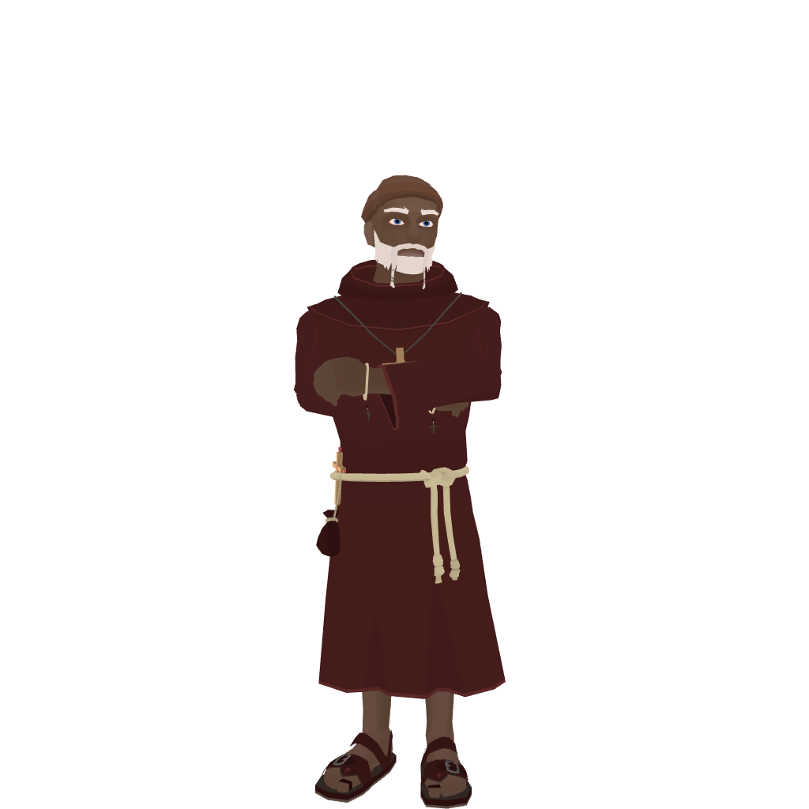
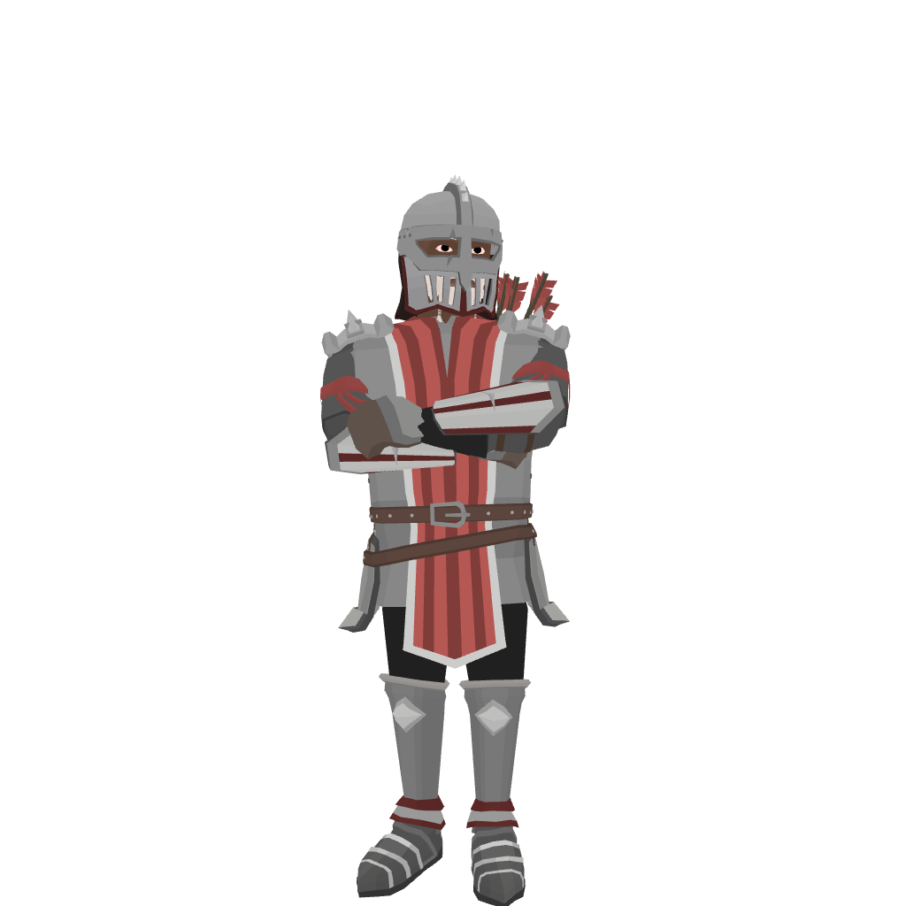
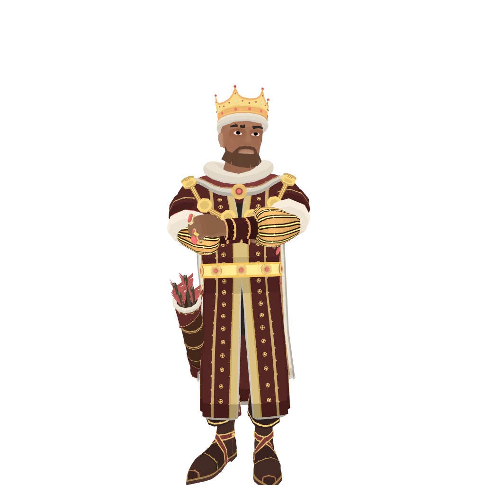
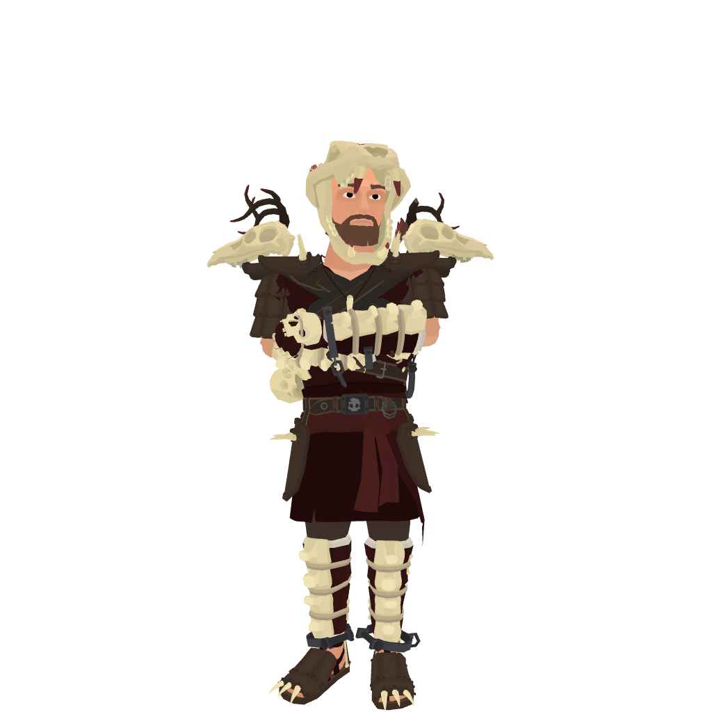

Joining The Clan
Joining is simple: ask to join, introduce yourself, and become part of the clan.
Members with talents beyond Narrow One may also earn special artist roles
for skills such as coding, music, writing, 3D modeling, and more.
Roles
Roles describe each clan member’s responsibilities. They are separate from ranks,
which represent a player’s level of skill and experience.
| Role | Description |
|---|---|
 Peasant |
A peasant is a new member who recently joined and has not yet passed the test to become a monk. They cannot train others or lead a practice team. |
 Monk |
A monk is a member who has passed the required tests. They can help other members and participate in clan wars. |
 Knight |
A knight can help others, participate in clan wars, train peasants when no king or fearless warrior is available, and co-lead practice sessions. |
 King |
A king can participate in clan wars, organize activities for other members, lead a practice team, and train others. |
 Fearless Warrior |
A fearless warrior can do everything a king can do and is also part of the clan congress. They help choose upcoming wars, select higher-rank quests, and manage the clan. |
Ranks
Ranks represent a player’s level of skill and experience within the clan.
| Rank | Description |
|---|---|
| Apprentice | The lowest rank in the clan, usually held by new members who are still learning the game. |
| Archer | A rank for members who have demonstrated growing skill and experience in the game. |
| Marksman | A rank for members who have demonstrated a high level of skill and experience in the game. |
| Sharpshooter | A rank for members who have demonstrated exceptional skill and extensive experience in the game. |
| Elite | The highest rank in the clan, usually held by its most skilled and experienced members. |
Practice Teams
Practice teams are groups of members who train together at a similar level based on their ranks.
They may practice once a week or once a month. For newer members, joining a practice team is not mandatory
but is strongly encouraged. Members at the Elite rank practice directly with M8M6.